Sporočila
Ohrani stik z ljudmi, s katerimi deliš atletiko.
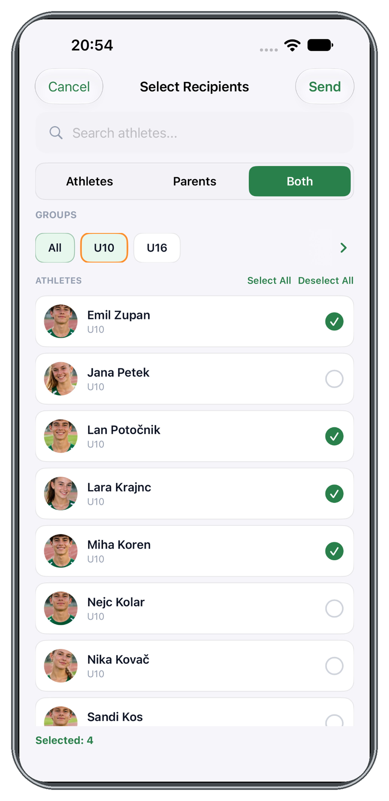
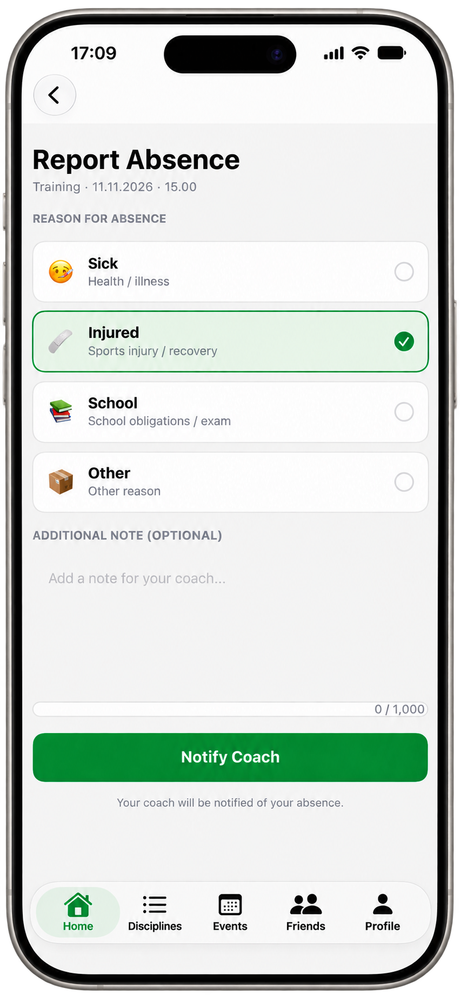
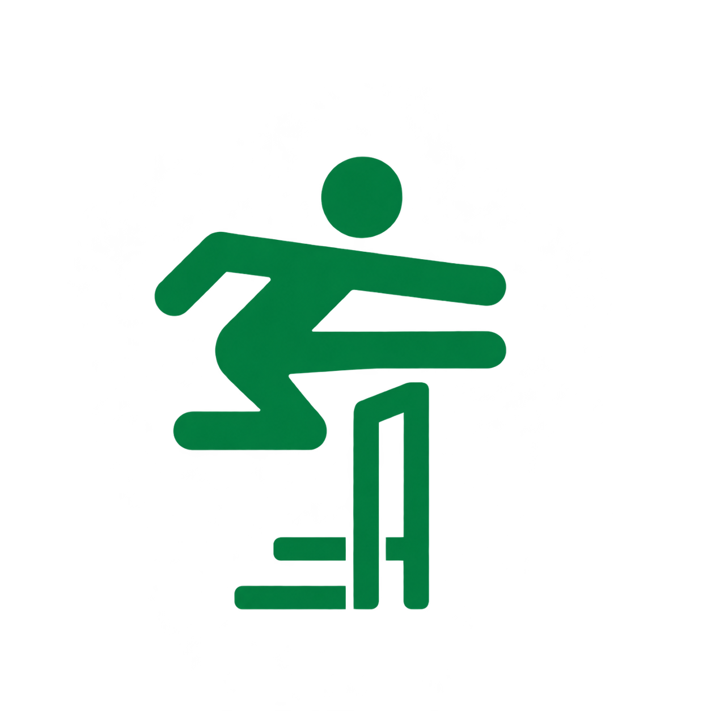
MyAthleticsZa ogled spletne strani vnesi štirimestno kodo.
ZA VSE, KI ŽIVITE ATLETIKO
Treningi, tekmovanja in napredek. MyAthletics povezuje atlete, trenerje, starše in klube.
Razišči funkcijePovezava do App Store še ni potrjena.
MYATHLETICS / iOS
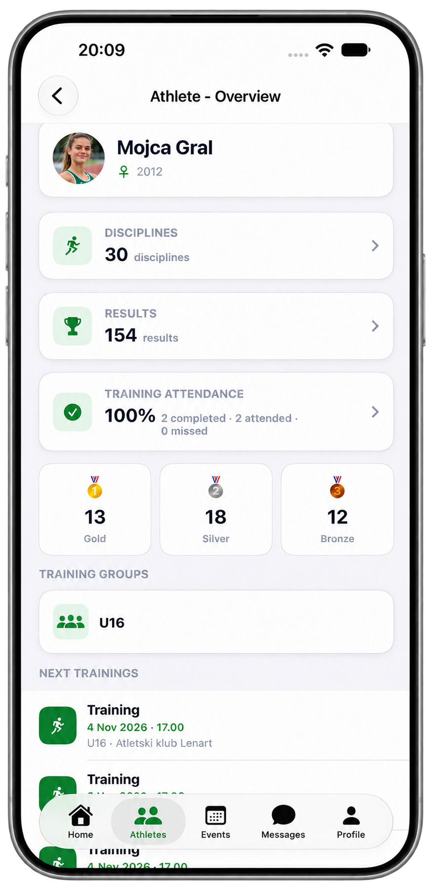
ATLETIKA. POVEZANA.
ATLETI · TRENERJI · STARŠI · KLUBI
Spoznaj MyAthletics01 / FUNKCIJE
TRENINGI & TEKMOVANJA
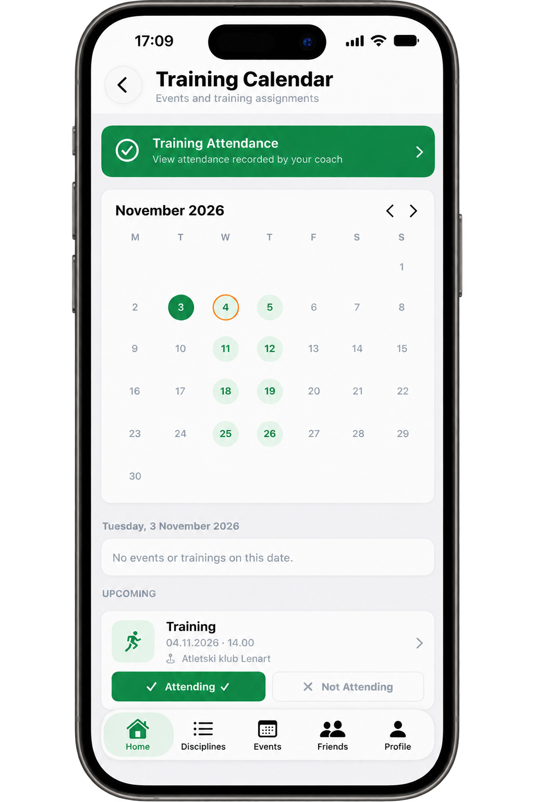
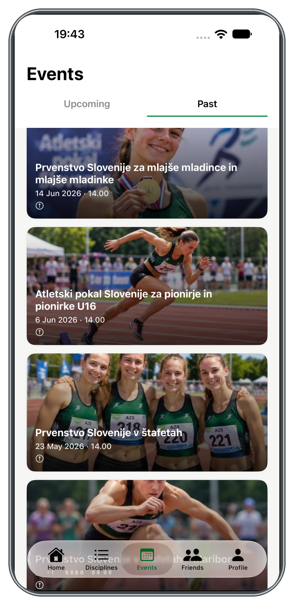
Treningi in tekmovanja so del iste poti. Ohrani pregled in se posveti temu, kar šteje.
Pregled treningov za atlete in trenerje.
Pregleden prostor za prihajajoča tekmovanja.
NAPREDEK & PREGLED
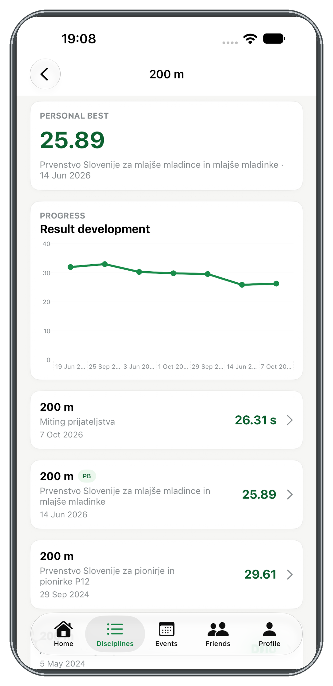
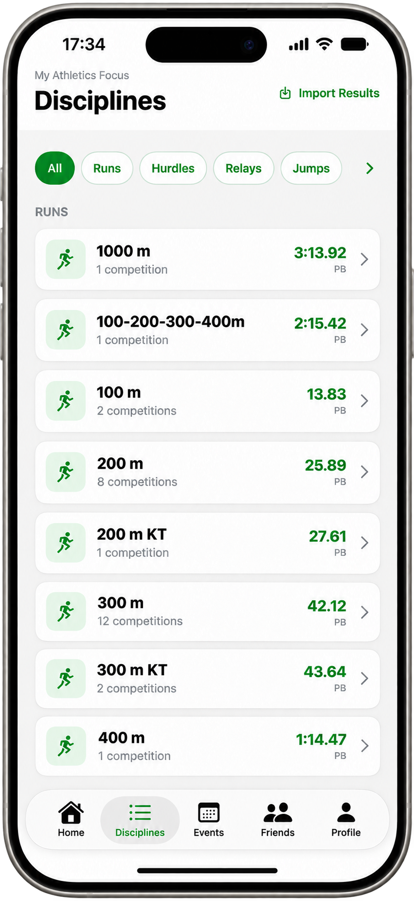
Rezultati in discipline ti pomagajo spremljati dosežke in osebne rekorde.
Rezultati in osebni rekordi na enem mestu.
Pregled atletskih disciplin, dosežkov in osebnih rekordov.
Ohrani stik z ljudmi, s katerimi deliš atletiko.


Pomembne informacije ostanejo v tvojem pregledu.
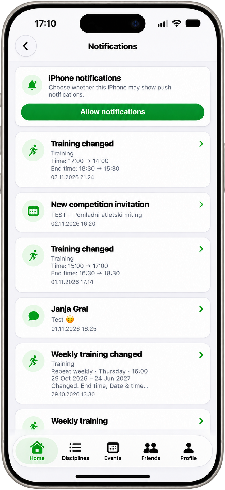
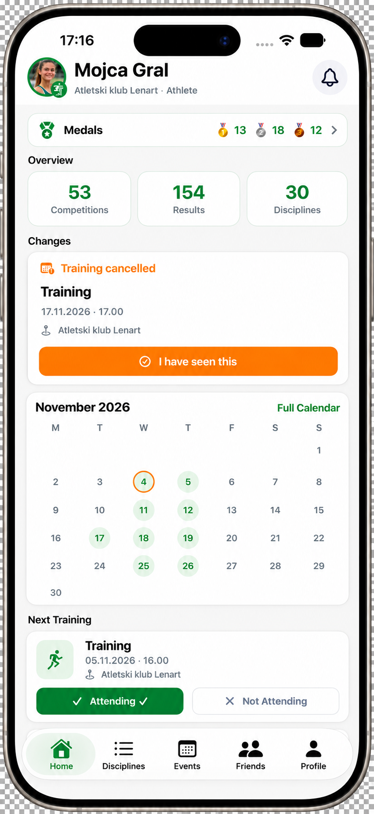
02 / ZA CELOTNO ATLETSKO SKUPNOST
Vsak ima svojo vlogo. MyAthletics nas povezuje.
Tvoji treningi, tekmovanja in osebni napredek.
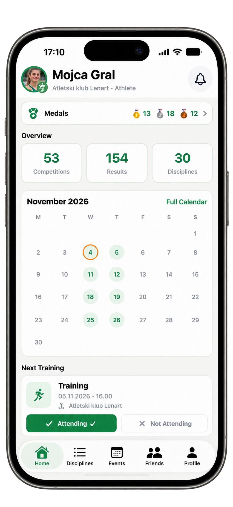
Koledar treningov in pregled ekipe.
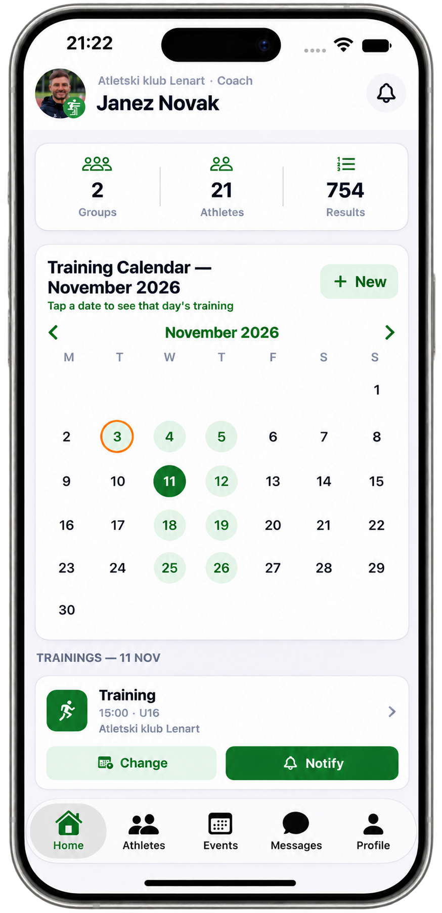
Odzivi in prisotnost na treningih.
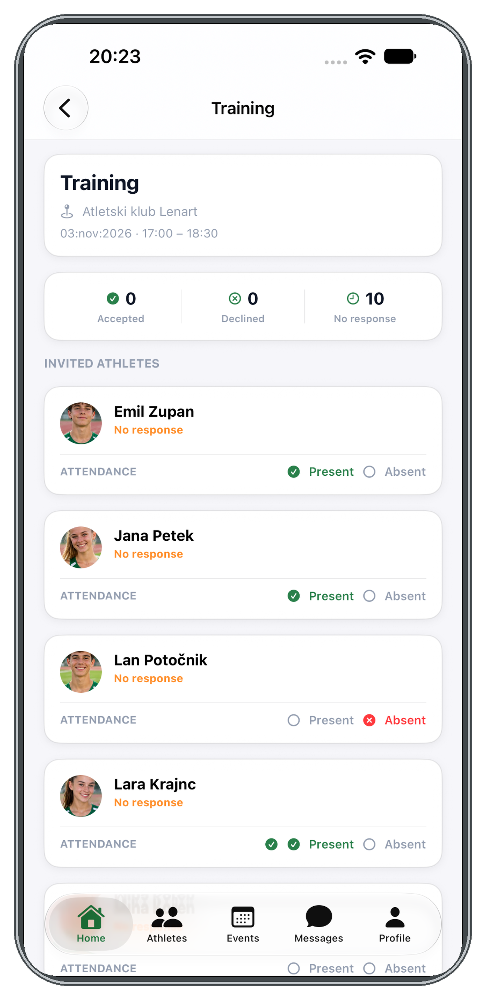
Pregled atletov in vadbenih skupin.

Bližje otrokovemu atletskemu vsakdanu.
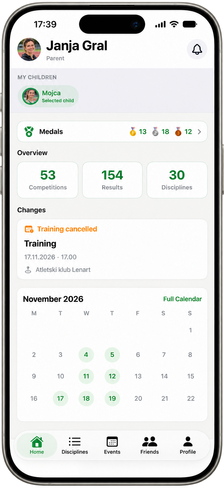
03 / ZA ATLETSKE KLUBE
Od atletov do vodje kluba. MyAthletics povezuje ljudi in informacije, ki so del vašega atletskega vsakdana.
POVEZAN KLUB. SKUPNA SMER.
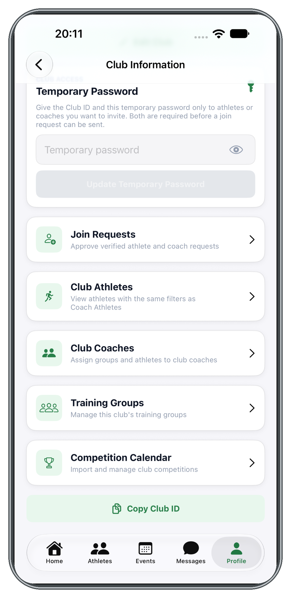
Treningi, tekmovanja in koledar povezujejo klubski vsakdan.
Sporočila in obvestila ohranjajo ljudi v stiku.
Rezultati in osebni rekordi ostanejo del atletske zgodbe.
04 / KAKO DELUJE
Atlet, trener, starš ali vodja kluba. Začni s pogledom, ki je namenjen tebi.
Ohrani pregled nad treningi, tekmovanji, rezultati in koledarjem.
Sporočila in obvestila te povezujejo s tvojo atletsko skupnostjo.
TUKAJ SMO ZATE
Potrebuješ pomoč pri uporabi ali te zanima MyAthletics za vaš klub? Z veseljem pomagamo.